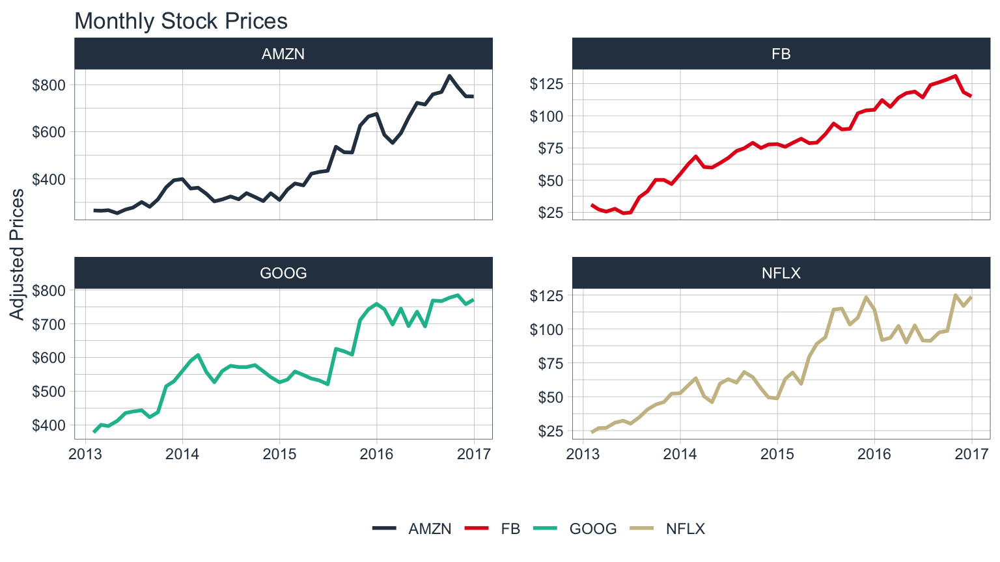
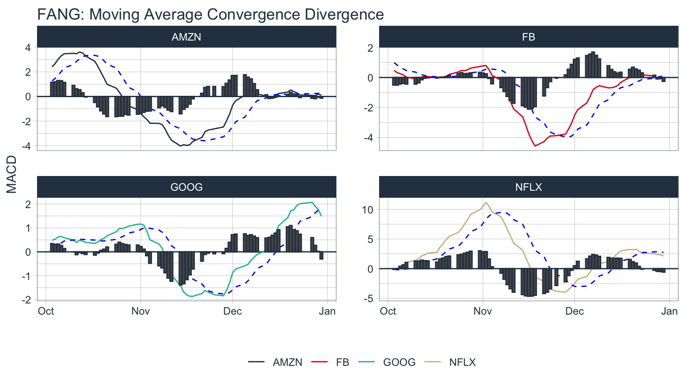
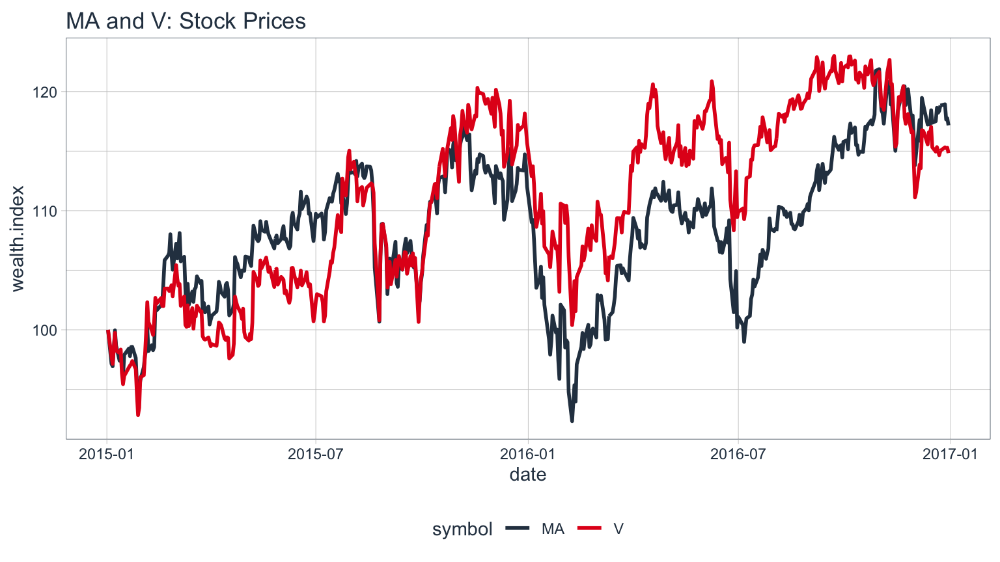

R Quantitative Analysis Package Integrations in tidyquant
Matt Dancho
2017-05-01
Functions that leverage the quantitative analysis functionality of
xts,zoo,quantmod,TTR, andPerformanceAnalytics
Overview
There’s a wide range of useful quantitative analysis functions that work with time-series objects. The problem is that many of these wonderful functions don’t work with data frames or the tidyverse workflow. That is until now! The tidyquant package integrates the most useful functions from the xts, zoo, quantmod, TTR, and PerformanceAnalytics packages. This vignette focuses on the following core functions to demonstrate how the integratation works with the quantitative finance packages:
- Transmute,
tq_transmute(): Returns a new tidy data frame typically in a different periodicity than the input. - Mutate,
tq_mutate(): Adds columns to the existing tidy data frame.
Refer to Performance Analysis with tidyquant for a full discussion on performance analysis and portfolio attribution with tidyquant.
Prerequisites
Load the tidyquant package to get started.
# Loads tidyquant, tidyverse, lubridate, xts, quantmod, TTR
library(tidyquant)Function Compatibility
tq_transmute_fun_options() returns a list the compatible mutate functions by each package. We’ll discuss these options by package briefly.
tq_transmute_fun_options() %>% str()## List of 5
## $ zoo : chr [1:14] "rollapply" "rollapplyr" "rollmax" "rollmax.default" ...
## $ xts : chr [1:27] "apply.daily" "apply.monthly" "apply.quarterly" "apply.weekly" ...
## $ quantmod : chr [1:25] "allReturns" "annualReturn" "ClCl" "dailyReturn" ...
## $ TTR : chr [1:61] "adjRatios" "ADX" "ALMA" "aroon" ...
## $ PerformanceAnalytics: chr [1:7] "Return.annualized" "Return.annualized.excess" "Return.clean" "Return.cumulative" ...zoo Functionality
# Get zoo functions that work with tq_transmute and tq_mutate
tq_transmute_fun_options()$zoo## [1] "rollapply" "rollapplyr" "rollmax"
## [4] "rollmax.default" "rollmaxr" "rollmean"
## [7] "rollmean.default" "rollmeanr" "rollmedian"
## [10] "rollmedian.default" "rollmedianr" "rollsum"
## [13] "rollsum.default" "rollsumr"The zoo functions that are compatible are listed above. Generally speaking, these are the:
- Roll Apply Functions:
- A generic function for applying a function to rolling margins.
- Form:
rollapply(data, width, FUN, ..., by = 1, by.column = TRUE, fill = if (na.pad) NA, na.pad = FALSE, partial = FALSE, align = c("center", "left", "right"), coredata = TRUE). - Options include
rollmax,rollmean,rollmedian,rollsum, etc.
xts Functionality
# Get xts functions that work with tq_transmute and tq_mutate
tq_transmute_fun_options()$xts## [1] "apply.daily" "apply.monthly" "apply.quarterly"
## [4] "apply.weekly" "apply.yearly" "diff.xts"
## [7] "lag.xts" "period.apply" "period.max"
## [10] "period.min" "period.prod" "period.sum"
## [13] "periodicity" "to_period" "to.daily"
## [16] "to.hourly" "to.minutes" "to.minutes10"
## [19] "to.minutes15" "to.minutes3" "to.minutes30"
## [22] "to.minutes5" "to.monthly" "to.period"
## [25] "to.quarterly" "to.weekly" "to.yearly"The xts functions that are compatible are listed above. Generally speaking, these are the:
- Period Apply Functions:
- Apply a function to a time segment (e.g.
max,min,mean, etc). - Form:
apply.daily(x, FUN, ...). - Options include
apply.daily,weekly,monthly,quarterly,yearly.
- Apply a function to a time segment (e.g.
- To-Period Functions:
- Convert a time series to time series of lower periodicity (e.g. convert daily to monthly periodicity).
- Form:
to.period(x, period = 'months', k = 1, indexAt, name = NULL, OHLC = TRUE, ...). - Options include
to.minutes,hourly,daily,weekly,monthly,quarterly,yearly. -
Note 1 (Important): The return structure is different for
to.periodand theto.monthly(to.weekly,to.quarterly, etc) forms.to.periodreturns a date, whileto.monthsreturns a character MON YYYY. Best to useto.periodif you want to work with time-series vialubridate.
quantmod Functionality
# Get quantmod functions that work with tq_transmute and tq_mutate
tq_transmute_fun_options()$quantmod## [1] "allReturns" "annualReturn" "ClCl"
## [4] "dailyReturn" "Delt" "HiCl"
## [7] "Lag" "LoCl" "LoHi"
## [10] "monthlyReturn" "Next" "OpCl"
## [13] "OpHi" "OpLo" "OpOp"
## [16] "periodReturn" "quarterlyReturn" "seriesAccel"
## [19] "seriesDecel" "seriesDecr" "seriesHi"
## [22] "seriesIncr" "seriesLo" "weeklyReturn"
## [25] "yearlyReturn"The quantmod functions that are compatible are listed above. Generally speaking, these are the:
- Percentage Change (Delt) and Lag Functions
- Delt:
Delt(x1, x2 = NULL, k = 0, type = c("arithmetic", "log"))- Variations of Delt: ClCl, HiCl, LoCl, LoHi, OpCl, OpHi, OpLo, OpOp
- Form:
OpCl(OHLC)
- Lag:
Lag(x, k = 1)/ Next:Next(x, k = 1)(Can also usedplyr::laganddplyr::lead)
- Delt:
- Period Return Functions:
- Get the arithmetic or logarithmic returns for various periodicity, which include daily, weekly, monthly, quarterly, and yearly.
- Form:
periodReturn(x, period = 'monthly', subset = NULL, type = 'arithmetic', leading = TRUE, ...)
- Series Functions:
- Return values that describe the series. Options include describing the increases/decreases, acceleration/deceleration, and hi/low.
- Forms:
seriesHi(x),seriesIncr(x, thresh = 0, diff. = 1L),seriesAccel(x)
TTR Functionality
# Get TTR functions that work with tq_transmute and tq_mutate
tq_transmute_fun_options()$TTR## [1] "adjRatios" "ADX" "ALMA"
## [4] "aroon" "ATR" "BBands"
## [7] "CCI" "chaikinAD" "chaikinVolatility"
## [10] "CLV" "CMF" "CMO"
## [13] "DEMA" "DonchianChannel" "DPO"
## [16] "DVI" "EMA" "EMV"
## [19] "EVWMA" "GMMA" "growth"
## [22] "HMA" "KST" "lags"
## [25] "MACD" "MFI" "momentum"
## [28] "OBV" "PBands" "ROC"
## [31] "rollSFM" "RSI" "runCor"
## [34] "runCov" "runMAD" "runMax"
## [37] "runMean" "runMedian" "runMin"
## [40] "runPercentRank" "runSD" "runSum"
## [43] "runVar" "SAR" "SMA"
## [46] "SMI" "stoch" "TDI"
## [49] "TRIX" "ultimateOscillator" "VHF"
## [52] "VMA" "volatility" "VWAP"
## [55] "VWMA" "wilderSum" "williamsAD"
## [58] "WMA" "WPR" "ZigZag"
## [61] "ZLEMA"Here’ a brief description of the most popular functions from TTR:
- Welles Wilder’s Directional Movement Index:
ADX(HLC, n = 14, maType, ...)
- Bollinger Bands:
-
BBands(HLC, n = 20, maType, sd = 2, ...): Bollinger Bands
-
- Rate of Change / Momentum:
-
ROC(x, n = 1, type = c("continuous", "discrete"), na.pad = TRUE): Rate of Change -
momentum(x, n = 1, na.pad = TRUE): Momentum
-
- Moving Averages (maType):
-
SMA(x, n = 10, ...): Simple Moving Average -
EMA(x, n = 10, wilder = FALSE, ratio = NULL, ...): Exponential Moving Average -
DEMA(x, n = 10, v = 1, wilder = FALSE, ratio = NULL): Double Exponential Moving Average -
WMA(x, n = 10, wts = 1:n, ...): Weighted Moving Average -
EVWMA(price, volume, n = 10, ...): Elastic, Volume-Weighted Moving Average -
ZLEMA(x, n = 10, ratio = NULL, ...): Zero Lag Exponential Moving Average -
VWAP(price, volume, n = 10, ...): Volume-Weighted Moving Average Price -
VMA(x, w, ratio = 1, ...): Variable-Length Moving Average -
HMA(x, n = 20, ...): Hull Moving Average -
ALMA(x, n = 9, offset = 0.85, sigma = 6, ...): Arnaud Legoux Moving Average
-
- MACD Oscillator:
MACD(x, nFast = 12, nSlow = 26, nSig = 9, maType, percent = TRUE, ...)
- Relative Strength Index:
RSI(price, n = 14, maType, ...)
- runFun:
-
runSum(x, n = 10, cumulative = FALSE): returns sums over a n-period moving window. -
runMin(x, n = 10, cumulative = FALSE): returns minimums over a n-period moving window. -
runMax(x, n = 10, cumulative = FALSE): returns maximums over a n-period moving window. -
runMean(x, n = 10, cumulative = FALSE): returns means over a n-period moving window. -
runMedian(x, n = 10, non.unique = "mean", cumulative = FALSE): returns medians over a n-period moving window. -
runCov(x, y, n = 10, use = "all.obs", sample = TRUE, cumulative = FALSE): returns covariances over a n-period moving window. -
runCor(x, y, n = 10, use = "all.obs", sample = TRUE, cumulative = FALSE): returns correlations over a n-period moving window. -
runVar(x, y = NULL, n = 10, sample = TRUE, cumulative = FALSE): returns variances over a n-period moving window. -
runSD(x, n = 10, sample = TRUE, cumulative = FALSE): returns standard deviations over a n-period moving window. -
runMAD(x, n = 10, center = NULL, stat = "median", constant = 1.4826, non.unique = "mean", cumulative = FALSE): returns median/mean absolute deviations over a n-period moving window. -
wilderSum(x, n = 10): retuns a Welles Wilder style weighted sum over a n-period moving window.
-
- Stochastic Oscillator / Stochastic Momentum Index:
-
stoch(HLC, nFastK = 14, nFastD = 3, nSlowD = 3, maType, bounded = TRUE, smooth = 1, ...): Stochastic Oscillator -
SMI(HLC, n = 13, nFast = 2, nSlow = 25, nSig = 9, maType, bounded = TRUE, ...): Stochastic Momentum Index
-
PerformanceAnalytics Functionality
# Get PerformanceAnalytics functions that work with tq_transmute and tq_mutate
tq_transmute_fun_options()$PerformanceAnalytics## [1] "Return.annualized" "Return.annualized.excess"
## [3] "Return.clean" "Return.cumulative"
## [5] "Return.excess" "Return.Geltner"
## [7] "zerofill"The PerformanceAnalytics mutation functions all deal with returns:
-
Return.annualizedandReturn.annualized.excess: Takes period returns and consolidates into annualized returns -
Return.clean: Removes outliers from returns -
Return.excess: Removes the risk-free rate from the returns to yield returns in excess of the risk-free rate -
zerofill: Used to replaceNAvalues with zeros.
Quantitative Power In Action
We’ll go through some examples, but first let’s get some data. The FANG data set will be used which consists of stock prices for FB, AMZN, NFLX, and GOOG from the beginning of 2013 to the end of 2016.
data(FANG)
FANG## # A tibble: 4,032 × 8
## symbol date open high low close volume adjusted
## <chr> <date> <dbl> <dbl> <dbl> <dbl> <dbl> <dbl>
## 1 FB 2013-01-02 27.44 28.18 27.42 28.00 69846400 28.00
## 2 FB 2013-01-03 27.88 28.47 27.59 27.77 63140600 27.77
## 3 FB 2013-01-04 28.01 28.93 27.83 28.76 72715400 28.76
## 4 FB 2013-01-07 28.69 29.79 28.65 29.42 83781800 29.42
## 5 FB 2013-01-08 29.51 29.60 28.86 29.06 45871300 29.06
## 6 FB 2013-01-09 29.67 30.60 29.49 30.59 104787700 30.59
## 7 FB 2013-01-10 30.60 31.45 30.28 31.30 95316400 31.30
## 8 FB 2013-01-11 31.28 31.96 31.10 31.72 89598000 31.72
## 9 FB 2013-01-14 32.08 32.21 30.62 30.95 98892800 30.95
## 10 FB 2013-01-15 30.64 31.71 29.88 30.10 173242600 30.10
## # ... with 4,022 more rowsExample 1: Use quantmod periodReturn to Convert Prices to Returns
The quantmod::periodReturn() function generates returns by periodicity. We’ll go through a couple usage cases.
Example 1A: Getting and Charting Annual Returns
We want to use the adjusted closing prices column (adjusted for stock splits, which can make it appear that a stock is performing poorly if a split is included). We set select = adjusted. We research the periodReturn function, and we found that it accepts type = "arithmetic" and period = "yearly", which returns the annual returns.
FANG_annual_returns <- FANG %>%
group_by(symbol) %>%
tq_transmute(select = adjusted,
mutate_fun = periodReturn,
period = "yearly",
type = "arithmetic")
FANG_annual_returns## Source: local data frame [16 x 3]
## Groups: symbol [4]
##
## symbol date yearly.returns
## <chr> <date> <dbl>
## 1 FB 2013-12-31 0.95178579
## 2 FB 2014-12-31 0.42763027
## 3 FB 2015-12-31 0.34145101
## 4 FB 2016-12-30 0.09927383
## 5 AMZN 2013-12-31 0.54984265
## 6 AMZN 2014-12-31 -0.22177086
## 7 AMZN 2015-12-31 1.17783149
## 8 AMZN 2016-12-30 0.10945565
## 9 NFLX 2013-12-31 3.00141286
## 10 NFLX 2014-12-31 -0.07214057
## 11 NFLX 2015-12-31 1.34378372
## 12 NFLX 2016-12-30 0.08235711
## 13 GOOG 2013-12-31 0.54954725
## 14 GOOG 2014-12-31 -0.05965347
## 15 GOOG 2015-12-31 0.44163478
## 16 GOOG 2016-12-30 0.01705145Charting annual returns is just a quick use of the ggplot2 package.
FANG_annual_returns %>%
ggplot(aes(x = date, y = yearly.returns, fill = symbol)) +
geom_bar(stat = "identity") +
geom_hline(yintercept = 0, color = palette_light()[[1]]) +
scale_y_continuous(labels = scales::percent) +
labs(title = "FANG: Annual Returns",
subtitle = "Get annual returns quickly with tq_transmute!",
y = "Annual Returns", x = "") +
facet_wrap(~ symbol, ncol = 2) +
theme_tq() +
scale_fill_tq()
Example 1B: Getting Daily Log Returns
Daily log returns follows a similar approach. Normally I go with a transmute function, tq_transmute, because the periodReturn function accepts different periodicity options, and anything other than daily will blow up a mutation. But, in our situation the period returns periodicity is the same as the stock prices periodicity (both daily), so we can use either. We want to use the adjusted closing prices column (adjusted for stock splits, which can make it appear that a stock is performing poorly if a split is included), so we set select = adjusted. We researched the periodReturn function, and we found that it accepts type = "log" and period = "daily", which returns the daily log returns.
FANG_daily_log_returns <- FANG %>%
group_by(symbol) %>%
tq_transmute(select = adjusted,
mutate_fun = periodReturn,
period = "daily",
type = "log",
col_rename = "monthly.returns")FANG_daily_log_returns %>%
ggplot(aes(x = monthly.returns, fill = symbol)) +
geom_density(alpha = 0.5) +
labs(title = "FANG: Charting the Daily Log Returns",
x = "Monthly Returns", y = "Density") +
theme_tq() +
scale_fill_tq() +
facet_wrap(~ symbol, ncol = 2)
Example 2: Use xts to.period to Change the Periodicity from Daily to Monthly
The xts::to.period function is used for periodicity aggregation (converting from a lower level periodicity to a higher level such as minutes to hours or months to years). Because we are seeking a return structure that is on a different time scale than the input (daily versus weekly), we need to use a transmute function. We select tq_transmute() and pass the open, high, low, close and volume columns via select = open:volume. Looking at the documentation for to.period, we see that it accepts a period argument that we can set to "weeks". The result is the OHLCV data returned with the dates changed to one day per week.
FANG %>%
group_by(symbol) %>%
tq_transmute(select = open:volume,
mutate_fun = to.period,
period = "months")## Source: local data frame [192 x 7]
## Groups: symbol [4]
##
## symbol date open high low close volume
## <chr> <date> <dbl> <dbl> <dbl> <dbl> <dbl>
## 1 FB 2013-01-31 29.15 31.47 28.74 30.98 190744900
## 2 FB 2013-02-28 26.84 27.30 26.34 27.25 83027800
## 3 FB 2013-03-28 26.09 26.17 25.52 25.58 28585700
## 4 FB 2013-04-30 27.13 27.85 27.01 27.77 36245700
## 5 FB 2013-05-31 24.63 24.95 24.27 24.35 35925000
## 6 FB 2013-06-28 24.68 24.98 24.42 24.88 96778900
## 7 FB 2013-07-31 37.96 38.31 36.33 36.80 154828700
## 8 FB 2013-08-30 42.02 42.26 41.06 41.29 67735100
## 9 FB 2013-09-30 50.14 51.60 49.80 50.23 100095000
## 10 FB 2013-10-31 47.16 52.00 46.50 50.21 248809000
## # ... with 182 more rowsA common usage case is to reduce the number of points to smooth time series plots. Let’s check out difference between daily and monthly plots.
Without Periodicity Aggregation
FANG_daily <- FANG %>%
group_by(symbol)
FANG_daily %>%
ggplot(aes(x = date, y = adjusted, color = symbol)) +
geom_line(size = 1) +
labs(title = "Daily Stock Prices",
x = "", y = "Adjusted Prices", color = "") +
facet_wrap(~ symbol, ncol = 2, scales = "free_y") +
scale_y_continuous(labels = scales::dollar) +
theme_tq() +
scale_color_tq()With Periodicity Aggregation
FANG_monthly <- FANG %>%
group_by(symbol) %>%
tq_transmute(select = adjusted,
mutate_fun = to.period,
period = "months")
FANG_monthly %>%
ggplot(aes(x = date, y = adjusted, color = symbol)) +
geom_line(size = 1) +
labs(title = "Monthly Stock Prices",
x = "", y = "Adjusted Prices", color = "") +
facet_wrap(~ symbol, ncol = 2, scales = "free_y") +
scale_y_continuous(labels = scales::dollar) +
theme_tq() +
scale_color_tq()
Example 3: Use TTR runCor to Visualize Rolling Correlations of Returns
Return correlations are a common way to analyze how closely an asset or portfolio mimics a baseline index or fund. We will need a set of returns for both the stocks and baseline. The stock will be the FANG data set and the baseline will be the Spdr XLK technology sector. We have the prices for the “FANG” stocks, so we use tq_get to retrieve the “XLK” prices. The returns can be calculated from the “adjusted” prices using the process in Example 1.
# Asset Returns
FANG_returns_monthly <- FANG %>%
group_by(symbol) %>%
tq_transmute(select = adjusted,
mutate_fun = periodReturn,
period = "monthly")
# Baseline Returns
baseline_returns_monthly <- "XLK" %>%
tq_get(get = "stock.prices",
from = "2013-01-01",
to = "2016-12-31") %>%
tq_transmute(select = adjusted,
mutate_fun = periodReturn,
period = "monthly")Next, join the asset returns with the baseline returns by date.
returns_joined <- left_join(FANG_returns_monthly,
baseline_returns_monthly,
by = "date")
returns_joined## Source: local data frame [192 x 4]
## Groups: symbol [?]
##
## symbol date monthly.returns.x monthly.returns.y
## <chr> <date> <dbl> <dbl>
## 1 FB 2013-01-31 0.1064285714 -0.013753802
## 2 FB 2013-02-28 -0.1204002582 0.007823146
## 3 FB 2013-03-28 -0.0612844037 0.025776961
## 4 FB 2013-04-30 0.0856137608 0.017509014
## 5 FB 2013-05-31 -0.1231544833 0.027922120
## 6 FB 2013-06-28 0.0217658727 -0.028917565
## 7 FB 2013-07-31 0.4790996977 0.037267072
## 8 FB 2013-08-30 0.1220109272 -0.010400248
## 9 FB 2013-09-30 0.2165172871 0.025321236
## 10 FB 2013-10-31 -0.0003981883 0.050249709
## # ... with 182 more rowsThe TTR::runCor function can be used to evaluate rolling correlations using the xy pattern. Looking at the documentation (?runCor), we can see that the arguments include x and y along with a few additional arguments including n for the width of the rolling correlation. Because the scale is monthly, we’ll go with n = 6 for a 6-month rolling correlation. The col_rename argument enables easy renaming of the output column(s).
FANG_rolling_corr <- returns_joined %>%
tq_transmute_xy(x = monthly.returns.x,
y = monthly.returns.y,
mutate_fun = runCor,
n = 6,
col_rename = "rolling.corr.6")And, we can plot the rolling correlations for the FANG stocks.
FANG_rolling_corr %>%
ggplot(aes(x = date, y = rolling.corr.6, color = symbol)) +
geom_hline(yintercept = 0, color = palette_light()[[1]]) +
geom_line(size = 1) +
labs(title = "FANG: Six Month Rolling Correlation to XLK",
x = "", y = "Correlation", color = "") +
facet_wrap(~ symbol, ncol = 2) +
theme_tq() +
scale_color_tq()Example 4: Use TTR MACD to Visualize Moving Average Convergence Divergence
In reviewing the available options in the TTR package, we see that MACD will get us the Moving Average Convergence Divergence (MACD). In researching the documentation, the return is in the same periodicity as the input and the functions work with OHLC functions, so we can use tq_mutate(). MACD requires a price, so we select close.
FANG_macd <- FANG %>%
group_by(symbol) %>%
tq_mutate(select = close,
mutate_fun = MACD,
nFast = 12,
nSlow = 26,
nSig = 9,
maType = SMA) %>%
mutate(diff = macd - signal) %>%
select(-(open:volume))
FANG_macd## Source: local data frame [4,032 x 6]
## Groups: symbol [4]
##
## symbol date adjusted macd signal diff
## <chr> <date> <dbl> <dbl> <dbl> <dbl>
## 1 FB 2013-01-02 28.00 NA NA NA
## 2 FB 2013-01-03 27.77 NA NA NA
## 3 FB 2013-01-04 28.76 NA NA NA
## 4 FB 2013-01-07 29.42 NA NA NA
## 5 FB 2013-01-08 29.06 NA NA NA
## 6 FB 2013-01-09 30.59 NA NA NA
## 7 FB 2013-01-10 31.30 NA NA NA
## 8 FB 2013-01-11 31.72 NA NA NA
## 9 FB 2013-01-14 30.95 NA NA NA
## 10 FB 2013-01-15 30.10 NA NA NA
## # ... with 4,022 more rowsAnd, we can visualize the data like so.
FANG_macd %>%
filter(date >= as_date("2016-10-01")) %>%
ggplot(aes(x = date)) +
geom_hline(yintercept = 0, color = palette_light()[[1]]) +
geom_line(aes(y = macd, col = symbol)) +
geom_line(aes(y = signal), color = "blue", linetype = 2) +
geom_bar(aes(y = diff), stat = "identity", color = palette_light()[[1]]) +
facet_wrap(~ symbol, ncol = 2, scale = "free_y") +
labs(title = "FANG: Moving Average Convergence Divergence",
y = "MACD", x = "", color = "") +
theme_tq() +
scale_color_tq()
Example 5: Use xts apply.quarterly to Get the Max and Min Price for Each Quarter
The xts::apply.quarterly() function that is part of the period apply group can be used to apply functions by quarterly time segments. Because we are seeking a return structure that is on a different time scale than the input (quarterly versus daily), we need to use a transmute function. We select tq_transmute and pass the close price using select, and we send this subset of the data to the apply.quarterly function via the mutate_fun argument. Looking at the documentation for apply.quarterly, we see that we can pass a function to the argument, FUN. We want the maximum values, so we set FUN = max. The result is the quarters returned as a date and the maximum closing price during the quarter returned as a double.
FANG_max_by_qtr <- FANG %>%
group_by(symbol) %>%
tq_transmute(select = adjusted,
mutate_fun = apply.quarterly,
FUN = max,
col_rename = "max.close") %>%
mutate(year.qtr = paste0(year(date), "-Q", quarter(date))) %>%
select(-date)
FANG_max_by_qtr## Source: local data frame [64 x 3]
## Groups: symbol [4]
##
## symbol max.close year.qtr
## <chr> <dbl> <chr>
## 1 FB 32.47 2013-Q1
## 2 FB 28.97 2013-Q2
## 3 FB 51.24 2013-Q3
## 4 FB 57.96 2013-Q4
## 5 FB 72.03 2014-Q1
## 6 FB 67.60 2014-Q2
## 7 FB 79.04 2014-Q3
## 8 FB 81.45 2014-Q4
## 9 FB 85.31 2015-Q1
## 10 FB 88.86 2015-Q2
## # ... with 54 more rowsThe minimum each quarter can be retrieved in much the same way. The data frames can be joined using left_join to get the max and min by quarter.
FANG_min_by_qtr <- FANG %>%
group_by(symbol) %>%
tq_transmute(select = adjusted,
mutate_fun = apply.quarterly,
FUN = min,
col_rename = "min.close") %>%
mutate(year.qtr = paste0(year(date), "-Q", quarter(date))) %>%
select(-date)
FANG_by_qtr <- left_join(FANG_max_by_qtr, FANG_min_by_qtr,
by = c("symbol" = "symbol",
"year.qtr" = "year.qtr"))
FANG_by_qtr## Source: local data frame [64 x 4]
## Groups: symbol [?]
##
## symbol max.close year.qtr min.close
## <chr> <dbl> <chr> <dbl>
## 1 FB 32.47 2013-Q1 25.13
## 2 FB 28.97 2013-Q2 22.90
## 3 FB 51.24 2013-Q3 24.37
## 4 FB 57.96 2013-Q4 44.82
## 5 FB 72.03 2014-Q1 53.53
## 6 FB 67.60 2014-Q2 56.14
## 7 FB 79.04 2014-Q3 62.76
## 8 FB 81.45 2014-Q4 72.63
## 9 FB 85.31 2015-Q1 74.05
## 10 FB 88.86 2015-Q2 77.46
## # ... with 54 more rowsAnd, we can visualize the data like so.
FANG_by_qtr %>%
ggplot(aes(x = year.qtr, color = symbol)) +
geom_segment(aes(xend = year.qtr, y = min.close, yend = max.close),
size = 1) +
geom_point(aes(y = max.close), size = 2) +
geom_point(aes(y = min.close), size = 2) +
facet_wrap(~ symbol, ncol = 2, scale = "free_y") +
labs(title = "FANG: Min/Max Price By Quarter",
y = "Stock Price", color = "") +
theme_tq() +
scale_color_tq() +
scale_y_continuous(labels = scales::dollar) +
theme(axis.text.x = element_text(angle = 90, hjust = 1),
axis.title.x = element_blank())
Example 6: Use zoo rollapply to visualize a rolling regression
A good way to analyze relationships over time is using rolling calculations that compare two assets. Pairs trading is a common mechanism for similar assets. While we will not go into a pairs trade analysis, we will analyze the relationship between two similar assets as a precursor to a pairs trade. In this example we will analyze two similar assets, Mastercard (MA) and Visa (V) to show the relationship via regression.
Before we analyze a rolling regression, it’s helpful to view the overall trend in returns. To do this, we use tq_get() to get stock prices for the assets and tq_transmute() to transform the daily prices to daily returns. We’ll collect the data and visualize via a scatter plot.
# Get stock pairs
stock_prices <- c("MA", "V") %>%
tq_get(get = "stock.prices",
from = "2015-01-01",
to = "2016-12-31") %>%
group_by(symbol)
stock_pairs <- stock_prices %>%
tq_transmute(select = adjusted,
mutate_fun = periodReturn,
period = "daily",
type = "log",
col_rename = "returns") %>%
spread(key = symbol, value = returns)We can visualize the relationship between the returns of the stock pairs like so.
stock_pairs %>%
ggplot(aes(x = V, y = MA)) +
geom_point(color = palette_light()[[1]], alpha = 0.5) +
geom_smooth(method = "lm") +
labs(title = "Visualizing Returns Relationship of Stock Pairs") +
theme_tq()We can get statistcs on the relationship from the lm function. The model is highly correlated with a p-value of essential zero. The coefficient estimate for V (Coefficient 1) is 0.8134 indicating a positive relationship, meaning as V increases MA also tends to increase.
lm(MA ~ V, data = stock_pairs) %>%
summary()##
## Call:
## lm(formula = MA ~ V, data = stock_pairs)
##
## Residuals:
## Min 1Q Median 3Q Max
## -0.026957 -0.003966 0.000215 0.003965 0.028946
##
## Coefficients:
## Estimate Std. Error t value Pr(>|t|)
## (Intercept) 0.0001130 0.0003097 0.365 0.715
## V 0.8133658 0.0226393 35.927 <2e-16 ***
## ---
## Signif. codes: 0 '***' 0.001 '**' 0.01 '*' 0.05 '.' 0.1 ' ' 1
##
## Residual standard error: 0.00695 on 502 degrees of freedom
## Multiple R-squared: 0.72, Adjusted R-squared: 0.7194
## F-statistic: 1291 on 1 and 502 DF, p-value: < 2.2e-16While this characterizes the overall relationship, it’s missing the time aspect. Fortunately, we can use the rollapply function from the zoo package to plot a rolling regression, showing how the model coefficent varies on a rolling basis over time. We calculate rolling regressions with tq_mutate() in two additional steps:
- Create a custom function
- Apply the function with
tq_mutate(mutate_fun = rollapply)
First, create a custom regression function. An important point is that the “data” will be passed to the regression function as an xts object. The as_tibble function takes care of converting to a data frame.
regr_fun <- function(data) {
coef(lm(MA ~ V, data = as_tibble(data)))
}Now we can use tq_mutate() to apply the custom regression function over a rolling window using rollapply from the zoo package. Internally, the returns_combined data frame is being passed automatically to the data argument of the rollapply function. All you need to specify is the mutate_fun = rollapply and any additional arguments necessary to apply the rollapply function. We’ll specify a 90 day window via width = 90. The FUN argument is our custom regression function, regr_fun. It’s extremely important to specify by.column = FALSE, which tells rollapply to perform the computation using the data as a whole rather than apply the function to each column independently. The col_rename argument is used to rename the added columns.
stock_pairs <- stock_pairs %>%
tq_mutate(mutate_fun = rollapply,
width = 90,
FUN = regr_fun,
by.column = FALSE,
col_rename = c("coef.0", "coef.1"))
stock_pairs## # A tibble: 504 × 5
## date MA V coef.0 coef.1
## <date> <dbl> <dbl> <dbl> <dbl>
## 1 2015-01-02 0.000000000 0.000000000 NA NA
## 2 2015-01-05 -0.028531131 -0.022320996 NA NA
## 3 2015-01-06 -0.002163988 -0.006464545 NA NA
## 4 2015-01-07 0.015435621 0.013309153 NA NA
## 5 2015-01-08 0.015434730 0.013323375 NA NA
## 6 2015-01-09 -0.012825923 -0.014934234 NA NA
## 7 2015-01-12 -0.012872662 -0.001959504 NA NA
## 8 2015-01-13 0.002276707 0.002918630 NA NA
## 9 2015-01-14 -0.001077833 -0.020219926 NA NA
## 10 2015-01-15 -0.014604069 -0.009554005 NA NA
## # ... with 494 more rowsFinally, we can visualize the first coefficient like so. A horizontal line is added using the full data set model. This gives us insight as to points in time where the relationship deviates significantly from the long run trend which can be explored for potential pair trade opportunities.
stock_pairs %>%
ggplot(aes(x = date, y = coef.1)) +
geom_line(size = 1, color = palette_light()[[1]]) +
geom_hline(yintercept = 0.8134, size = 1, color = palette_light()[[2]]) +
labs(title = "MA ~ V: Visualizing Rolling Regression Coefficient", x = "") +
theme_tq()Stock returns during this time period.
stock_prices %>%
tq_transmute(adjusted,
periodReturn,
period = "daily",
type = "log",
col_rename = "returns") %>%
mutate(wealth.index = 100 * cumprod(1 + returns)) %>%
ggplot(aes(x = date, y = wealth.index, color = symbol)) +
geom_line(size = 1) +
labs(title = "MA and V: Stock Prices") +
theme_tq() +
scale_color_tq()
Example 7: Use Return.clean and Return.excess to clean and calculate excess returns
In this example we use several of the PerformanceAnalytics functions to clean and format returns. The example uses three progressive applications of tq_transmute to apply various quant functions to the grouped stock prices from the FANG data set. First, we calculate daily returns using quantmod::periodReturn. Next, we use Return.clean to clean outliers from the return data. The alpha parameter is the percentage of oultiers to be cleaned. Finally, the excess returns are calculated using a risk-free rate of 3% (divided by 252 for 252 trade days in one year).
FANG %>%
group_by(symbol) %>%
tq_transmute(adjusted, periodReturn, period = "daily") %>%
tq_transmute(daily.returns, Return.clean, alpha = 0.05) %>%
tq_transmute(daily.returns, Return.excess, Rf = 0.03 / 252)## Source: local data frame [4,032 x 3]
## Groups: symbol [4]
##
## symbol date `daily.returns > Rf`
## <chr> <date> <dbl>
## 1 FB 2013-01-02 -0.0001190476
## 2 FB 2013-01-03 -0.0083333333
## 3 FB 2013-01-04 0.0355309344
## 4 FB 2013-01-07 0.0228294920
## 5 FB 2013-01-08 -0.0123556554
## 6 FB 2013-01-09 0.0525306789
## 7 FB 2013-01-10 0.0230911191
## 8 FB 2013-01-11 0.0132994832
## 9 FB 2013-01-14 -0.0243938908
## 10 FB 2013-01-15 -0.0275827301
## # ... with 4,022 more rows